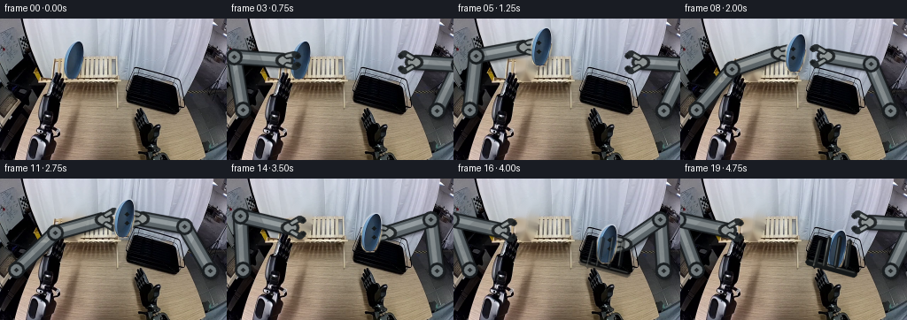
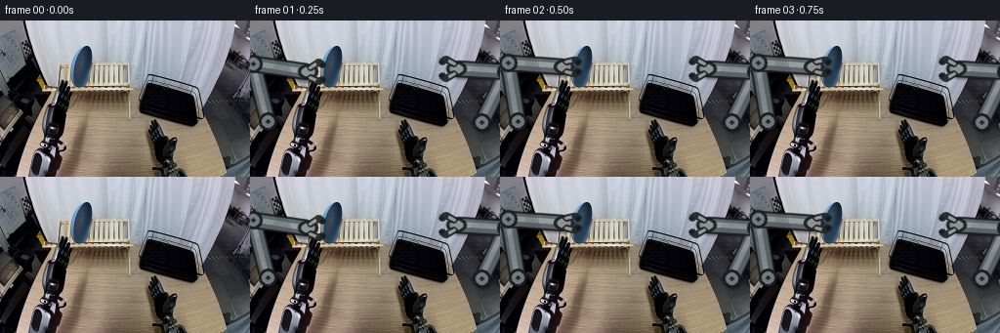

CODING AGENTS AS PIXEL WORLD MODELS
traex/GPT-5.6-Sol · common50_0035
点击播放 · 原生 RGB 像素
逐轮保存的候选
回放视频、检查图与代码变化。
每份候选均可单独播放。实际图片检查记录在下方工具轨迹中。
候选 01播放与检查图
点击播放 · 原生 RGB 像素


展开代码变化
--- 上一保存版本
+++ 本次保存版本
@@ -0,0 +1,215 @@
+from pathlib import Path
+import math
+import cv2
+import numpy as np
+from PIL import Image
+import artifact_io
+
+CASE_DIR = Path(__file__).resolve().parent
+N, H, W = 20, 160, 256
+
+
+def smooth(t):
+ t = float(np.clip(t, 0.0, 1.0))
+ return t*t*(3.0-2.0*t)
+
+
+def mix(a, b, t):
+ t = smooth(t)
+ return (a[0] + (b[0]-a[0])*t, a[1] + (b[1]-a[1])*t)
+
+
+def alpha_over(dst, src, alpha):
+ a = np.asarray(alpha, np.float32)
+ if a.ndim == 2:
+ a = a[..., None]
+ a /= 255.0
+ return np.clip(dst.astype(np.float32)*(1-a) + src.astype(np.float32)*a, 0, 255).astype(np.uint8)
+
+
+def draw_line(layer, alpha, p, q, color, width, opacity=255):
+ p = tuple(np.rint(p).astype(int)); q = tuple(np.rint(q).astype(int))
+ cv2.line(layer, p, q, color, width, cv2.LINE_AA)
+ cv2.line(alpha, p, q, int(opacity), width, cv2.LINE_AA)
+
+
+def draw_circle(layer, alpha, p, radius, color, opacity=255):
+ p = tuple(np.rint(p).astype(int))
+ cv2.circle(layer, p, radius, color, -1, cv2.LINE_AA)
+ cv2.circle(alpha, p, radius, int(opacity), -1, cv2.LINE_AA)
+
+
+def ik(shoulder, target, l1, l2, side):
+ s = np.asarray(shoulder, np.float64); t = np.asarray(target, np.float64)
+ v = t-s; d = float(np.linalg.norm(v)); d = min(max(d, abs(l1-l2)+.01), l1+l2-.01)
+ u = v / (np.linalg.norm(v)+1e-9)
+ a = (l1*l1-l2*l2+d*d)/(2*d)
+ h = math.sqrt(max(0.0, l1*l1-a*a))
+ perp = np.array([-u[1], u[0]])
+ return s + a*u + side*h*perp
+
+
+def render_arm(frame, shoulder, wrist, side_name, grip, opacity=242):
+ """A rigid two-link industrial arm. Link lengths never change."""
+ if side_name == 'left':
+ elbow = ik(shoulder, wrist, 61.0, 56.0, -1.0)
+ else:
+ elbow = ik(shoulder, wrist, 58.0, 50.0, 1.0)
+ s=np.asarray(shoulder); e=np.asarray(elbow); w=np.asarray(wrist)
+ layer=np.zeros_like(frame); a=np.zeros((H,W),np.uint8)
+ # Soft contact shadow makes the links sit in the existing scene.
+ sh=np.zeros((H,W),np.uint8)
+ cv2.line(sh, tuple(np.rint(s+[2,3]).astype(int)), tuple(np.rint(e+[2,3]).astype(int)), 95, 15, cv2.LINE_AA)
+ cv2.line(sh, tuple(np.rint(e+[2,3]).astype(int)), tuple(np.rint(w+[2,3]).astype(int)), 95, 14, cv2.LINE_AA)
+ sh=cv2.GaussianBlur(sh,(5,5),1.2)
+ black=np.zeros_like(frame)
+ frame=alpha_over(frame,black,sh)
+ # Dark fixed shells, silver faces, continuous highlight. Crisp circles emphasize rigidity.
+ for p,q in ((s,e),(e,w)):
+ draw_line(layer,a,p,q,(26,31,34),15,opacity)
+ draw_line(layer,a,p,q,(92,101,105),11,opacity)
+ draw_line(layer,a,p+np.array([-1.0,-1.0]),q+np.array([-1.0,-1.0]),(157,166,168),3,205)
+ for p,r in ((s,9),(e,9),(w,7)):
+ draw_circle(layer,a,p,r,(25,30,33),opacity)
+ draw_circle(layer,a,p,r-3,(117,126,129),opacity)
+ draw_circle(layer,a,p,2,(38,43,45),opacity)
+ frame=alpha_over(frame,layer,a)
+ # Gripper palm and two parallel jaws. Tips stay separated and do not deform.
+ layer[:]=0; a[:]=0
+ x,y=w
+ if side_name=='left':
+ direction=1
+ else:
+ direction=-1
+ open_y = 7.0 if grip else 10.0
+ # wrist collar and rectangular palm
+ draw_line(layer,a,(x-3*direction,y),(x+5*direction,y),(31,35,37),12,opacity)
+ draw_line(layer,a,(x-2*direction,y),(x+4*direction,y),(145,151,151),7,opacity)
+ # upper/lower fingers: straight steel rails with inward black pads
+ for sy in (-1,1):
+ p0=np.array((x+3*direction,y+sy*5.0))
+ p1=np.array((x+12*direction,y+sy*open_y))
+ p2=np.array((x+16*direction,y+sy*(5.2 if grip else 7.5)))
+ draw_line(layer,a,p0,p1,(32,37,39),5,opacity)
+ draw_line(layer,a,p0,p1,(149,156,156),2,opacity)
+ draw_line(layer,a,p1,p2,(34,39,41),5,opacity)
+ draw_circle(layer,a,p2,2,(18,22,24),opacity)
+ return alpha_over(frame,layer,a)
+
+
+def extract_plate(first):
+ hsv=cv2.cvtColor(first,cv2.COLOR_RGB2HSV)
+ raw=cv2.inRange(hsv,np.array((90,60,45),np.uint8),np.array((140,255,255),np.uint8))
+ n,labels,stats,_=cv2.connectedComponentsWithStats(raw)
+ # The blue plate is the dominant compact blue component around (83,47).
+ candidates=[i for i in range(1,n) if 65 < stats[i,0] < 100 and stats[i,1] < 75]
+ idx=max(candidates,key=lambda i:stats[i,4])
+ comp=np.uint8(labels==idx)*255
+ contours,_=cv2.findContours(comp,cv2.RETR_EXTERNAL,cv2.CHAIN_APPROX_SIMPLE)
+ hull=cv2.convexHull(max(contours,key=cv2.contourArea))
+ mask=np.zeros((H,W),np.uint8); cv2.fillConvexPoly(mask,hull,255,cv2.LINE_AA)
+ mask=cv2.dilate(mask,np.ones((3,3),np.uint8),iterations=1)
+ mask=cv2.GaussianBlur(mask,(3,3),0.55)
+ ys,xs=np.where(mask>8)
+ x0,x1=xs.min(),xs.max()+1; y0,y1=ys.min(),ys.max()+1
+ crop=first[y0:y1,x0:x1].copy(); am=mask[y0:y1,x0:x1].copy()
+ # center from the visible plate component, retained as the rigid reference point
+ center=(83.0,47.0)
+ return crop,am,(x0,y0),center,mask
+
+
+def place_plate(frame, rgb, am, origin, src_center, center, shadow=True):
+ dx=int(round(center[0]-src_center[0])); dy=int(round(center[1]-src_center[1]))
+ x=origin[0]+dx; y=origin[1]+dy; h,w=am.shape
+ if shadow:
+ sm=np.zeros((H,W),np.uint8)
+ yy0=max(0,y+3); xx0=max(0,x+3); yy1=min(H,y+h+3); xx1=min(W,x+w+3)
+ if yy1>yy0 and xx1>xx0:
+ sy0=yy0-(y+3); sx0=xx0-(x+3)
+ sm[yy0:yy1,xx0:xx1]=np.maximum(sm[yy0:yy1,xx0:xx1],(am[sy0:sy0+yy1-yy0,sx0:sx0+xx1-xx0]*0.25).astype(np.uint8))
+ sm=cv2.GaussianBlur(sm,(7,7),2)
+ frame=alpha_over(frame,np.zeros_like(frame),sm)
+ x0=max(0,x);y0=max(0,y);x1=min(W,x+w);y1=min(H,y+h)
+ if x1>x0 and y1>y0:
+ sx=x0-x;sy=y0-y
+ frame[y0:y1,x0:x1]=alpha_over(frame[y0:y1,x0:x1],rgb[sy:sy+y1-y0,sx:sx+x1-x0],am[sy:sy+y1-y0,sx:sx+x1-x0])
+ return frame
+
+
+def plate_position(i):
+ # Deliberate pick, lift, handoff, and lowering motion with eased knots.
+ knots=[(0,(83,47)),(3,(83,47)),(5,(99,32)),(7,(120,33)),
+ (9,(140,45)),(11,(140,45)),(13,(156,53)),(15,(170,69)),
+ (17,(176,79)),(19,(176,80))]
+ for (f0,p0),(f1,p1) in zip(knots[:-1],knots[1:]):
+ if f0<=i<=f1:
+ return mix(p0,p1,(i-f0)/(f1-f0))
+ return knots[-1][1]
+
+
+def draw_rack_foreground(frame, strength=255):
+ """Front lip/tines of the existing black drying rack occlude the placed plate."""
+ layer=np.zeros_like(frame); a=np.zeros((H,W),np.uint8)
+ # front lower rail follows the perspective already present in the source
+ draw_line(layer,a,(144,94),(196,108),(20,23,24),5,strength)
+ draw_line(layer,a,(145,92),(196,106),(76,79,77),1,190)
+ # narrow rigid retaining tines
+ for x,bx,top in [(158,151,70),(168,162,67),(180,175,66),(191,187,70)]:
+ draw_line(layer,a,(bx,99),(x,top),(22,25,26),3,strength)
+ draw_line(layer,a,(bx-1,98),(x-1,top),(92,95,91),1,170)
+ return alpha_over(frame,layer,a)
+
+
+def main():
+ first=np.array(Image.open(CASE_DIR/'first_frame.png').convert('RGB'),dtype=np.uint8)
+ plate_rgb,plate_a,plate_origin,plate_src_center,plate_fullmask=extract_plate(first)
+ # Remove only the original plate. Telea uses solely local pixels from its stand/background.
+ hard=np.uint8(plate_fullmask>20)*255
+ hard=cv2.dilate(hard,np.ones((3,3),np.uint8),iterations=1)
+ clean=cv2.inpaint(first,hard,5,cv2.INPAINT_TELEA)
+ frames=[]
+ left_shoulder=(18.0,103.0); right_shoulder=(237.0,104.0)
+ left_park=(52.0,58.0); right_park=(212.0,49.0)
+ for i in range(N):
+ if i==0:
+ frames.append(first.copy()); continue
+ c=plate_position(i)
+ # Keep the untouched source through the reach; clean it once lift starts.
+ frame=(first.copy() if i<=3 else clean.copy())
+ # Wrist trajectories. During frames 9-11 both grippers visibly share the load.
+ if i<=2:
+ lw=mix(left_park,(c[0]-19,c[1]),i/2)
+ elif i<=10:
+ lw=(c[0]-19,c[1])
+ else:
+ lw=mix((140-19,45),left_park,(i-10)/6)
+ if i<=6:
+ rw=right_park
+ elif i<=9:
+ rw=mix(right_park,(c[0]+19,c[1]),(i-6)/3)
+ elif i<=17:
+ rw=(c[0]+19,c[1])
+ else:
+ rw=mix((176+19,80),right_park,(i-17)/2)
+ lgrip=(2<=i<=10)
+ rgrip=(9<=i<=17)
+ frame=render_arm(frame,left_shoulder,lw,'left',lgrip)
+ frame=render_arm(frame,right_shoulder,rw,'right',rgrip)
+ # Prior to lift the original plate is already exact; afterwards move the rigid cutout.
+ if i>=4:
+ frame=place_plate(frame,plate_rgb,plate_a,plate_origin,plate_src_center,c,shadow=(i<17))
+ # Grippers were rendered below the object; redraw just their dark contact pads by small dots.
+ if lgrip:
+ for yy in (-5,5): cv2.circle(frame,(int(round(c[0]-3)),int(round(c[1]+yy))),2,(20,24,25),-1,cv2.LINE_AA)
+ if rgrip:
+ for yy in (-5,5): cv2.circle(frame,(int(round(c[0]+3)),int(round(c[1]+yy))),2,(20,24,25),-1,cv2.LINE_AA)
+ if i>=16:
+ frame=draw_rack_foreground(frame, int(255*smooth((i-15)/2)))
+ frames.append(frame)
+ frames=np.stack(frames).astype(np.uint8)
+ assert frames.shape==(20,160,256,3)
+ assert np.array_equal(frames[0],first)
+ artifact_io.save(frames,CASE_DIR)
+
+if __name__=='__main__':
+ main()
可观测工具轨迹
实际执行的命令与返回图片。
命令 1exit 0
/bin/bash -lc "cat prompt.txt && printf '\\n--- RULES ---\\n' && cat GENERATION_RULES.md"
命令 2exit 0
/bin/bash -lc "find . -maxdepth 2 -type f -printf '%p %s bytes\\n' | sort && printf '\\nTOOLS\\n' && command -v ffmpeg || true && command -v python3 || true"
命令 3exit 0
/bin/bash -lc "cat task_spec.json; sed -n '1,240p' artifact_io.py"
命令 4exit 0
/bin/bash -lc "python3 - <<'PY'
from PIL import Image
import numpy as np
im=np.array(Image.open('first_frame.png').convert('RGB'))
print(im.shape,im.dtype, im.min(),im.max())
# coarse color/location clusters quantized 32
from collections import Counter
q=(im//32)*32
c=Counter(map(tuple,q.reshape(-1,3)))
for col,n in c.most_common(30): print(col,n)
# blue pixels criteria
for name,mask in {
'blue':(im[:,:,2]>im[:,:,0]*1.25)&(im[:,:,2]>im[:,:,1]*1.1)&(im[:,:,2]>80),
'black':(im.max(2)<60),
'wood':(im[:,:,0]>90)&(im[:,:,0]>im[:,:,1]*1.15)&(im[:,:,1]>im[:,:,2]*1.15)
}.items():
ys,xs=np.where(mask); print(name,len(xs), (xs.min(),ys.min(),xs.max(),ys.max()) if len(xs) else None, (xs.mean(),ys.mean()) if len(xs) else None)
# row/col sums peaks
print(' rows',sorted(enumerate(np.bincount(ys,minlength=160)),key=lambda x:x[1],reverse=True)[:10])
print(' cols',sorted(enumerate(np.bincount(xs,minlength=256)),key=lambda x:x[1],reverse=True)[:10])
PY"命令 5exit 0
/bin/bash -lc "python3 - <<'PY'
import cv2, numpy as np
from PIL import Image
im=cv2.imread('first_frame.png'); hsv=cv2.cvtColor(im,cv2.COLOR_BGR2HSV)
for lo,hi,name in [((90,60,50),(140,255,255),'blue'),((95,100,50),(135,255,255),'blue_sat'),((85,30,30),(145,255,255),'bluewide'),((0,0,0),(180,255,55),'dark'),((5,60,60),(35,255,255),'wood')]:
m=cv2.inRange(hsv,np.array(lo),np.array(hi))
n,lab,st,cents=cv2.connectedComponentsWithStats(m)
print('\\n',name,'total',np.sum(m>0))
for i in sorted(range(1,n), key=lambda i: st[i,4],reverse=True)[:20]:
x,y,w,h,a=st[i]; print(i,'bbox',x,y,w,h,'area',a,'cen',np.round(cents[i],1))
# edge component-ish contours
ed=cv2.Canny(im,50,130)
cs,_=cv2.findContours(ed,cv2.RETR_LIST,cv2.CHAIN_APPROX_SIMPLE)
print('\\nContours')
for c in sorted(cs,key=cv2.contourArea,reverse=True)[:30]:
x,y,w,h=cv2.boundingRect(c); print('bbox',x,y,w,h,'area',round(cv2.contourArea(c),1),'len',round(cv2.arcLength(c,True),1))
PY"命令 6exit 0
/bin/bash -lc "python3 - <<'PY'
from PIL import Image
import numpy as np
im=np.array(Image.open('first_frame.png').convert('RGB'))
# tile classification by avg 4x4; print hex-ish semantic based avg
for y in range(0,160,5):
s=''
for x in range(0,256,5):
a=im[y:y+5,x:x+5].mean((0,1)); r,g,b=a
if b>r*1.2 and b>g*1.08 and b>70: c='B'
elif max(a)<55:c='#'
elif max(a)<90:c='d'
elif max(a)-min(a)<15 and max(a)>190:c='W'
elif max(a)-min(a)<20 and max(a)>130:c='g'
elif b>r*.9 and b>g*.95 and b>95:c='s' # steel bluish
elif r>g*1.12 and g>b*1.08 and r>90:c='o'
elif r>g*1.08 and r>b*1.12:c='n'
elif max(a)<130:c='m'
else:c='.'
s+=c
print(f'{y:03d} {s}')
PY"命令 7exit 0
/bin/bash -lc "python3 - <<'PY'
from PIL import Image
import numpy as np
im=np.array(Image.open('first_frame.png').convert('RGB'))
# for x55:140 y18:75 classify each 2x2 and print coords columns every 5
for y in range(18,76,2):
s=''
for x in range(55,141,2):
a=im[y:y+2,x:x+2].mean((0,1));r,g,b=a
# hue categories
if b>r*1.3 and b>g*1.12 and b>70:c='B'
elif b>r*1.15 and b>g*1.02 and b>70:c='b'
elif max(a)<45:c='#'
elif max(a)<75:c='D'
elif max(a)-min(a)<12 and max(a)>210:c='W'
elif max(a)-min(a)<18 and max(a)>140:c='G'
elif b>r*.9 and b>g*.95 and b>100:c='s'
elif r>g*1.12 and g>b*1.06 and r>80:c='o'
elif r>g*1.08 and r>b*1.1:c='n'
elif max(a)<130:c='m'
else:c='.'
s+=c
print(f'{y:03d} {s}')
# colors in blue comp extremes and horizontal intervals per row using hsv mask
import cv2
bgr=im[:,:,::-1];hsv=cv2.cvtColor(bgr,cv2.COLOR_BGR2HSV); m=cv2.inRange(hsv,np.array((90,60,50)),np.array((140,255,255)))>0
print('blue intervals')
for y in range(20,72):
xs=np.where(m[y])[0]; xs=xs[(xs>50)&(xs<140)]
if len(xs): print(y, [(a[0],a[-1]) for a in np.split(xs,np.where(np.diff(xs)>1)[0]+1)])
PY"命令 8exit 0
/bin/bash -lc "python3 - <<'PY'
from PIL import Image
import numpy as np, cv2
im=np.array(Image.open('first_frame.png').convert('RGB'))
# custom classify 2x2 left and right, print
for region in [(0,0,75,160),(130,35,256,130)]:
x0,y0,x1,y1=region; print('\\nREGION',region)
print(' '+''.join(str((x//10)%10) for x in range(x0,x1,2)))
for y in range(y0,y1,2):
s=''
for x in range(x0,x1,2):
a=im[y:y+2,x:x+2].mean((0,1));r,g,b=a
hsv=cv2.cvtColor(np.uint8([[a]]),cv2.COLOR_RGB2HSV)[0,0]; h,ss,v=hsv
if 90<=h<=140 and ss>70 and v>50:c='B'
elif v<35:c='#'
elif v<65:c='D'
elif ss<18 and v>210:c='W'
elif ss<22 and v>140:c='G'
elif 85<=h<=145 and ss<80 and v>90:c='s'
elif 4<=h<=35 and ss>60 and v>70:c='o'
elif ss>40 and r>g and r>b:c='n'
elif v<110:c='m'
else:c='.'
s+=c
print(f'{y:03d} {s}')
PY"命令 9exit 0
/bin/bash -lc "python3 - <<'PY'
import cv2,numpy as np
im=cv2.imread('first_frame.png')
g=cv2.cvtColor(im,cv2.COLOR_BGR2GRAY)
ls=cv2.HoughLinesP(cv2.Canny(g,70,160),1,np.pi/180,threshold=20,minLineLength=10,maxLineGap=3)
arr=[]
for l in ls[:,0]:
x1,y1,x2,y2=map(int,l); L=((x2-x1)**2+(y2-y1)**2)**.5; ang=np.degrees(np.arctan2(y2-y1,x2-x1));arr.append((L,ang,(x1,y1,x2,y2)))
for a in sorted(arr,reverse=True)[:100]: print('%5.1f %6.1f'%a[:2],a[2])
PY"命令 10exit 0
/bin/bash -lc "cat > generate.py <<'PY'
from pathlib import Path
import math
import cv2
import numpy as np
from PIL import Image
import artifact_io
CASE_DIR = Path(__file__).resolve().parent
N, H, W = 20, 160, 256
def smooth(t):
t = float(np.clip(t, 0.0, 1.0))
return t*t*(3.0-2.0*t)
def mix(a, b, t):
t = smooth(t)
return (a[0] + (b[0]-a[0])*t, a[1] + (b[1]-a[1])*t)
def alpha_over(dst, src, alpha):
a = np.asarray(alpha, np.float32)
if a.ndim == 2:
a = a[..., None]
a /= 255.0
return np.clip(dst.astype(np.float32)*(1-a) + src.astype(np.float32)*a, 0, 255).astype(np.uint8)
def draw_line(layer, alpha, p, q, color, width, opacity=255):
p = tuple(np.rint(p).astype(int)); q = tuple(np.rint(q).astype(int))
cv2.line(layer, p, q, color, width, cv2.LINE_AA)
cv2.line(alpha, p, q, int(opacity), width, cv2.LINE_AA)
def draw_circle(layer, alpha, p, radius, color, opacity=255):
p = tuple(np.rint(p).astype(int))
cv2.circle(layer, p, radius, color, -1, cv2.LINE_AA)
cv2.circle(alpha, p, radius, int(opacity), -1, cv2.LINE_AA)
def ik(shoulder, target, l1, l2, side):
s = np.asarray(shoulder, np.float64); t = np.asarray(target, np.float64)
v = t-s; d = float(np.linalg.norm(v)); d = min(max(d, abs(l1-l2)+.01), l1+l2-.01)
u = v / (np.linalg.norm(v)+1e-9)
a = (l1*l1-l2*l2+d*d)/(2*d)
h = math.sqrt(max(0.0, l1*l1-a*a))
perp = np.array([-u[1], u[0]])
return s + a*u + side*h*perp
def render_arm(frame, shoulder, wrist, side_name, grip, opacity=242):
\"\"\"A rigid two-link industrial arm. Link lengths never change.\"\"\"
if side_name == 'left':
elbow = ik(shoulder, wrist, 61.0, 56.0, -1.0)
else:
elbow = ik(shoulder, wrist, 58.0, 50.0, 1.0)
s=np.asarray(shoulder); e=np.asarray(elbow); w=np.asarray(wrist)
layer=np.zeros_like(frame); a=np.zeros((H,W),np.uint8)
# Soft contact shadow makes the links sit in the existing scene.
sh=np.zeros((H,W),np.uint8)
cv2.line(sh, tuple(np.rint(s+[2,3]).astype(int)), tuple(np.rint(e+[2,3]).astype(int)), 95, 15, cv2.LINE_AA)
cv2.line(sh, tuple(np.rint(e+[2,3]).astype(int)), tuple(np.rint(w+[2,3]).astype(int)), 95, 14, cv2.LINE_AA)
sh=cv2.GaussianBlur(sh,(5,5),1.2)
black=np.zeros_like(frame)
frame=alpha_over(frame,black,sh)
# Dark fixed shells, silver faces, continuous highlight. Crisp circles emphasize rigidity.
for p,q in ((s,e),(e,w)):
draw_line(layer,a,p,q,(26,31,34),15,opacity)
draw_line(layer,a,p,q,(92,101,105),11,opacity)
draw_line(layer,a,p+np.array([-1.0,-1.0]),q+np.array([-1.0,-1.0]),(157,166,168),3,205)
for p,r in ((s,9),(e,9),(w,7)):
draw_circle(layer,a,p,r,(25,30,33),opacity)
draw_circle(layer,a,p,r-3,(117,126,129),opacity)
draw_circle(layer,a,p,2,(38,43,45),opacity)
frame=alpha_over(frame,layer,a)
# Gripper palm and two parallel jaws. Tips stay separated and do not deform.
layer[:]=0; a[:]=0
x,y=w
if side_name=='left':
direction=1
else:
direction=-1
open_y = 7.0 if grip else 10.0
# wrist collar and rectangular palm
draw_line(layer,a,(x-3*direction,y),(x+5*direction,y),(31,35,37),12,opacity)
draw_line(layer,a,(x-2*direction,y),(x+4*direction,y),(145,151,151),7,opacity)
# upper/lower fingers: straight steel rails with inward black pads
for sy in (-1,1):
p0=np.array((x+3*direction,y+sy*5.0))
p1=np.array((x+12*direction,y+sy*open_y))
p2=np.array((x+16*direction,y+sy*(5.2 if grip else 7.5)))
draw_line(layer,a,p0,p1,(32,37,39),5,opacity)
draw_line(layer,a,p0,p1,(149,156,156),2,opacity)
draw_line(layer,a,p1,p2,(34,39,41),5,opacity)
draw_circle(layer,a,p2,2,(18,22,24),opacity)
return alpha_over(frame,layer,a)
def extract_plate(first):
hsv=cv2.cvtColor(first,cv2.COLOR_RGB2HSV)
raw=cv2.inRange(hsv,np.array((90,60,45),np.uint8),np.array((140,255,255),np.uint8))
n,labels,stats,_=cv2.connectedComponentsWithStats(raw)
# The blue plate is the dominant compact blue component around (83,47).
candidates=[i for i in range(1,n) if 65 < stats[i,0] < 100 and stats[i,1] < 75]
idx=max(candidates,key=lambda i:stats[i,4])
comp=np.uint8(labels==idx)*255
contours,_=cv2.findContours(comp,cv2.RETR_EXTERNAL,cv2.CHAIN_APPROX_SIMPLE)
hull=cv2.convexHull(max(contours,key=cv2.contourArea))
mask=np.zeros((H,W),np.uint8); cv2.fillConvexPoly(mask,hull,255,cv2.LINE_AA)
mask=cv2.dilate(mask,np.ones((3,3),np.uint8),iterations=1)
mask=cv2.GaussianBlur(mask,(3,3),0.55)
ys,xs=np.where(mask>8)
x0,x1=xs.min(),xs.max()+1; y0,y1=ys.min(),ys.max()+1
crop=first[y0:y1,x0:x1].copy(); am=mask[y0:y1,x0:x1].copy()
# center from the visible plate component, retained as the rigid reference point
center=(83.0,47.0)
return crop,am,(x0,y0),center,mask
def place_plate(frame, rgb, am, origin, src_center, center, shadow=True):
dx=int(round(center[0]-src_center[0])); dy=int(round(center[1]-src_center[1]))
x=origin[0]+dx; y=origin[1]+dy; h,w=am.shape
if shadow:
sm=np.zeros((H,W),np.uint8)
yy0=max(0,y+3); xx0=max(0,x+3); yy1=min(H,y+h+3); xx1=min(W,x+w+3)
if yy1>yy0 and xx1>xx0:
sy0=yy0-(y+3); sx0=xx0-(x+3)
sm[yy0:yy1,xx0:xx1]=np.maximum(sm[yy0:yy1,xx0:xx1],(am[sy0:sy0+yy1-yy0,sx0:sx0+xx1-xx0]*0.25).astype(np.uint8))
sm=cv2.GaussianBlur(sm,(7,7),2)
frame=alpha_over(frame,np.zeros_like(frame),sm)
x0=max(0,x);y0=max(0,y);x1=min(W,x+w);y1=min(H,y+h)
if x1>x0 and y1>y0:
sx=x0-x;sy=y0-y
frame[y0:y1,x0:x1]=alpha_over(frame[y0:y1,x0:x1],rgb[sy:sy+y1-y0,sx:sx+x1-x0],am[sy:sy+y1-y0,sx:sx+x1-x0])
return frame
def plate_position(i):
# Deliberate pick, lift, handoff, and lowering motion with eased knots.
knots=[(0,(83,47)),(3,(83,47)),(5,(99,32)),(7,(120,33)),
(9,(140,45)),(11,(140,45)),(13,(156,53)),(15,(170,69)),
(17,(176,79)),(19,(176,80))]
for (f0,p0),(f1,p1) in zip(knots[:-1],knots[1:]):
if f0<=i<=f1:
return mix(p0,p1,(i-f0)/(f1-f0))
return knots[-1][1]
def draw_rack_foreground(frame, strength=255):
\"\"\"Front lip/tines of the existing black drying rack occlude the placed plate.\"\"\"
layer=np.zeros_like(frame); a=np.zeros((H,W),np.uint8)
# front lower rail follows the perspective already present in the source
draw_line(layer,a,(144,94),(196,108),(20,23,24),5,strength)
draw_line(layer,a,(145,92),(196,106),(76,79,77),1,190)
# narrow rigid retaining tines
for x,bx,top in [(158,151,70),(168,162,67),(180,175,66),(191,187,70)]:
draw_line(layer,a,(bx,99),(x,top),(22,25,26),3,strength)
draw_line(layer,a,(bx-1,98),(x-1,top),(92,95,91),1,170)
return alpha_over(frame,layer,a)
def main():
first=np.array(Image.open(CASE_DIR/'first_frame.png').convert('RGB'),dtype=np.uint8)
plate_rgb,plate_a,plate_origin,plate_src_center,plate_fullmask=extract_plate(first)
# Remove only the original plate. Telea uses solely local pixels from its stand/background.
hard=np.uint8(plate_fullmask>20)*255
hard=cv2.dilate(hard,np.ones((3,3),np.uint8),iterations=1)
clean=cv2.inpaint(first,hard,5,cv2.INPAINT_TELEA)
frames=[]
left_shoulder=(18.0,103.0); right_shoulder=(237.0,104.0)
left_park=(52.0,58.0); right_park=(212.0,49.0)
for i in range(N):
if i==0:
frames.append(first.copy()); continue
c=plate_position(i)
# Keep the untouched source through the reach; clean it once lift starts.
frame=(first.copy() if i<=3 else clean.copy())
# Wrist trajectories. During frames 9-11 both grippers visibly share the load.
if i<=2:
lw=mix(left_park,(c[0]-19,c[1]),i/2)
elif i<=10:
lw=(c[0]-19,c[1])
else:
lw=mix((140-19,45),left_park,(i-10)/6)
if i<=6:
rw=right_park
elif i<=9:
rw=mix(right_park,(c[0]+19,c[1]),(i-6)/3)
elif i<=17:
rw=(c[0]+19,c[1])
else:
rw=mix((176+19,80),right_park,(i-17)/2)
lgrip=(2<=i<=10)
rgrip=(9<=i<=17)
frame=render_arm(frame,left_shoulder,lw,'left',lgrip)
frame=render_arm(frame,right_shoulder,rw,'right',rgrip)
# Prior to lift the original plate is already exact; afterwards move the rigid cutout.
if i>=4:
frame=place_plate(frame,plate_rgb,plate_a,plate_origin,plate_src_center,c,shadow=(i<17))
# Grippers were rendered below the object; redraw just their dark contact pads by small dots.
if lgrip:
for yy in (-5,5): cv2.circle(frame,(int(round(c[0]-3)),int(round(c[1]+yy))),2,(20,24,25),-1,cv2.LINE_AA)
if rgrip:
for yy in (-5,5): cv2.circle(frame,(int(round(c[0]+3)),int(round(c[1]+yy))),2,(20,24,25),-1,cv2.LINE_AA)
if i>=16:
frame=draw_rack_foreground(frame, int(255*smooth((i-15)/2)))
frames.append(frame)
frames=np.stack(frames).astype(np.uint8)
assert frames.shape==(20,160,256,3)
assert np.array_equal(frames[0],first)
artifact_io.save(frames,CASE_DIR)
if __name__=='__main__':
main()
PY
python3 generate.py
python3 - <<'PY'
from PIL import Image
import numpy as np
f=np.array(Image.open('first_frame.png').convert('RGB')); z=np.load('pixels.npz')['pixels'];
r=((z>>16)&255).astype(np.uint8);g=((z>>8)&255).astype(np.uint8);b=(z&255).astype(np.uint8); a=np.stack([r,g,b],-1).transpose(2,0,1,3)
print(a.shape,a.dtype,'frame0 exact',np.array_equal(a[0],f))
for i in range(20):
print(i,'changed',np.count_nonzero(np.any(a[i]"'!=f,axis=2)),'"'delta',0 if i==0 else np.count_nonzero(np.any(a[i]"'!=a[i-1],axis=2)))
PY'命令 11exit 0
/bin/bash -lc "python3 - <<'PY' import generate, numpy as np for i in range(20): c=generate.plate_position(i) # repeat wrist lp=(52,58);rp=(212,49) if i<=2: lw=generate.mix(lp,(c[0]-19,c[1]),i/2) elif i<=10:lw=(c[0]-19,c[1]) else:lw=generate.mix((121,45),lp,(i-10)/6) if i<=6:rw=rp elif i<=9:rw=generate.mix(rp,(c[0]+19,c[1]),(i-6)/3) elif i<=17:rw=(c[0]+19,c[1]) else:rw=generate.mix((195,80),rp,(i-17)/2) le=generate.ik((18,103),lw,61,56,-1);re=generate.ik((237,104),rw,58,50,1) print(i,'plate',tuple(round(x,1) for x in c),'Lw/e',lw,np.round(le,1),'Rw/e',rw,np.round(re,1)) PY"
命令 12exit 0
/bin/bash -lc "python3 generate.py && python3 - <<'PY'
from pathlib import Path
from PIL import Image
import hashlib, numpy as np
first=Path('first_frame.png').read_bytes(); f0=Path('frames/00.png').read_bytes()
# PNG encoding can vary, compare decoded pixels.
a=np.array(Image.open('first_frame.png')); b=np.array(Image.open('frames/00.png'))
print('outputs:',[(p.name,p.stat().st_size) for p in [Path('pixels.npz'),Path('inspection.png'),Path('index.html')]])
print('20 frames:',len(list(Path('frames').glob('*.png'))),'frame00_exact:',np.array_equal(a,b),'shape:',b.shape)
print('pixels_sha256:',hashlib.sha256(Path('pixels.npz').read_bytes()).hexdigest())
PY"保存候选 1 份；完成命令 12 次；可验证图片返回 0 张。原始 API 响应与完整日志保留在本地。